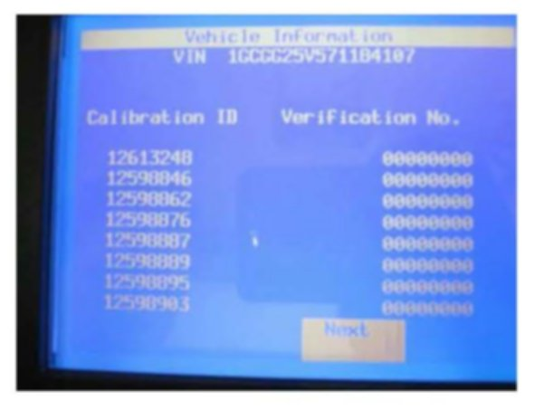

Section 5
5. Tech 2(R) Displaying All Zeroes for the Verification Numbers on the Vehicle Information - Calibration ID and Verification No. (Number/CVN) Screen
If the Tech 2(R) that is being used displays all zeroes for the Verification Numbers as shown, then perform the following steps:
1. Update the Tech 2(R) with the latest software from TIS2WEB.
2. Turn OFF the ignition for 90 seconds.
3. Connect the Tech 2(R) to the vehicle.
4. Turn ON the ignition, and build the vehicle. Observe the Tech 2(R) Vehicle Information - Calibration ID and Verification No. (Number/CVN) screen for proper operation.
^ If the Tech 2(R) screen still does not display properly, then turn OFF the ignition for 90 seconds again. Turn ON the ignition and observe the same screen for proper operation.